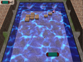

Aktion Bildschirmfotos
Organisatorisches¶
Ansprechpartner der Aktion ist das Wikiteammitglied Das Wort. Bei Fragen und Unklarheiten aller Art bitte in der Diskussion nachfragen. Wer noch nicht der Wiki-Syntax mächtig ist, darf neue Bilder auch gerne an einen Beitrag in der Diskussion anhängen.

Voraussetzungen¶
Wissen / Programme¶
Um an der Aktion teilzunehmen, braucht man ein Programm, mit dem man Bildschirmfotos aufnehmen kann. Jede Ubuntu-Variante hat bereits eines vorinstalliert, der Funktionsumfang dieser Programme ist jedoch meistens gering. Alternative Programme wie Shutter besitzen Komfortfunktionen, die das Erstellen und die Nachbearbeitung von Bildern stark vereinfachen.
Wichtige Artikel:
Bildschirmfotos - Programmübersicht
Wiki/Bildschirmfotos - Welche Anforderungen ein Bild für das Wiki haben sollte
Wiki/Syntax - Syntax unseres Wikis. Besonders wichtig ist hier der Abschnitt Bilder.
Um Bilder an Artikel anzuhängen oder bestehende Bilder zu verändern bzw. zu ersetzen, muss man bei einem Wikiartikel den Reiter "Mehr" auswählen und danach "Anhänge verwalten". Der Artikel Dateianhänge beschreibt das Thema genauer.
Welche Bildschirmfotos sollen aktualisiert werden?¶
Es sollen alle veralteten Bildschirmfotos erneuert werden. Also alle, die eine ältere Version als Ubuntu 10.04 zeigen. Bei vielen Programmen gab es aufgrund von GNOME 3 und GTK+ 3 größere Umbauarbeiten, hier sollte mind. Ubuntu 12.04 verwendet werden. Außerdem sollen alle Bilder erneuert werden, die schlecht oder zu gewagt aussehen. Ebenfalls sollen alle schwer erkennbaren Screenshots erneuert werden. Aber nicht nur zu alte Bilder, auch zu kleine Bilder sollen aktualisiert werden.
| Beispiele | |
| Altes Theme | Zu kleiner Screenshot |
|  | |
Anmerkung: Die Bilder in der Spielesektion wurden 2005 verkleinert, da es einen Bug gab und dadurch die Ladezeiten verkürzt werden sollten.
Wie sollen die Screenshots aussehen?¶
Welche Version?¶
Die Bilder sollten unter einem aktuellen Ubuntu erstellt werden. Also mit einer der folgenden Versionen: 11.10, 12.04, 12.10. Bitte keine Bilder von 10.04 da diese Version bald nicht mehr unterstützt wird und deshalb die Bildschirmfotos nicht mehr passen würden.
Optimal wäre die LTS-Version 12.04.
Welches Themes?¶
Es sollte ein Standard-Theme genutzt werden oder ein gewöhnliches Theme sein. Dunkle Themes (Beispiel) oder extrem schlichte Themes (Beispiel) sind eher unerwünscht.
Das verwendete Theme sollte es einfach machen, verschiedene Elemente von einander unterscheiden zu können. Außerdem sollte es nicht mit gewohnten Elementen brechen, so sollen Checkboxen auch vom Laien als solche erkannt werden können. Wenn es sich bei einer Anwendung um eine Standardanwendung handelt (Software-Center, Empathy, Firefox), sollte das Bildschirmfoto unter der Arbeitsumgebung aufgenommen sein, mit der das Programm ausgeliefert wird. Bei anderen Anwendungen können andere Themes eingesetzt werden.
Hier ein paar Beispiele:
Dolphin ist Teil des KDE-Desktops und sollte entsprechend abgebildet sein
Der Editor Mousepad wird mit Xubuntu ausgeliefert, sollte also unter einem XFCE-Desktop aufgenommen werden
Bei Bildschirmfotos von Spielen ist eine Fensterdekoration störend und muss deshalb entfernt werden.
Icon Themes¶
Sollte man das Icons-Theme geändert haben, ist dies kein Problem. Sollte es sich dabei jedoch um ein sehr Ausgefallenes handeln, sollte vor der Aufnahme besser auf das Standard-Iconset gewechselt werden.
Passend sind Sets wie:
Humanity (Ubuntu) sowie die Icon-Themes der Ubuntu-Derivate
Tango (GNOME)
Oxygen (KDE)
Faenza, Faenza Ambiance, Faenza Cupertino (Kubuntu)
Nicht passend sind Sets wie
Aw0ken
Faenza Dark, Faenca Darker, …
Minty
Was soll gezeigt werden?¶
Es gilt immer: nicht mehr als nötig. Dass heißt, das Fenster sollte so groß sein, dass es alles Nötige zeigt. Denn leere Flächen bieten keinerlei nützliche Informationen. Außerdem hat nicht jeder Besucher unseres Portals eine schnelle Internetverbindung.
Bitte kein rechtlich problematisches Material verwenden. Damit sind auch urheberrechtlich geschützte Werke gemeint. Bei einem Screenshot eines Videoplayers bitte kein Bild von Matrix o.ä. zeigen. Filme bzw. Inhalte unter freier oder CC-Lizenz wie etwa Sintel bieten sich dazu besonders an.
Außerdem sollen neutrale Inhalte gezeigt werden, also keine persönlichen E-Mails im E-Mail-Client oder andere sensible Daten.
Artikel suchen, eintragen und bearbeiten¶
Am effektivsten erweist es sich, wenn man eine Kategorie im Wiki wählt und von dort durch das Wiki navigiert.
Ist ein Artikel gefunden, trägt man diesen in die Liste ein. Möchte man ein Bild für einen Artikel erstellen, dann schreibt man seinen Namen hinter den Artikelnamen, damit es keine Doppelungen gibt. Bei sehr großen Artikel mit vielen Bildern ist es sinnvoll, einen Kommentar zu hinterlassen. Außer, man kümmert sich um alle Bilder des Artikels.
Für besonders Fleißige¶
Auch im Software-Center von Ubuntu werden Screenshots von Anwendungen angezeigt. Falls man für das Wiki einen Screenshot eines Programms macht, kann man auch im Software-Center überprüfen, ob es einen aktuellen Screenshot hat. Falls nicht, kann man einen neuen Screenshot einfach über ubuntu.com screenshot upload hochladen. Auf der Seite findet man noch einige spezifische Anforderungen an Screenshots für das Software-Center. Das meiste deckt sich mit den Richtlinien fürs Wiki. Allerdings sollten Screenshots für das Software-Center die Anwendungen in Englisch zeigen. Daher startet man das jeweilige Programm am besten aus einem Terminal mit geänderter Sprache:
LANG=C programmname
- Erstellt mit Inyoka
-
 2004 – 2017 ubuntuusers.de • Einige Rechte vorbehalten
2004 – 2017 ubuntuusers.de • Einige Rechte vorbehalten
Lizenz • Kontakt • Datenschutz • Impressum • Serverstatus -
Serverhousing gespendet von